The Digital League was a community for tech professionals and startups in the Verona, Italy area. Its mission was to bring people together around the topics of internet culture, technology, startups & entrepreneurship.
TDL started networking initiatives, promoted like-minded communities and events via media partnerships, sponsored a Startup Weekend, and most importantly built The Collective, the first coworking space specifically intended for Verona's tech crowd.
I took care of every aspect of TDL's product design, both in digital and in print.
Logo Design & identity
Logo, Final Version
Vector VS FX
I designed the logo's basic shape in Illustrator, then imported it in Photoshop and added thickness, volume, light effects. After that, I enriched it with textures, patterns, and details. The logo has been featured in Inspirefirst, Downgraf, and many others.
Iterations
Details
Details
Colors & typography
-
#b0b8ab
-
#c86649
-
#2f2e2e
-
#626b56
- 
-

UI Design
▲ The Digital League is no longer active, so it has no use for a full-fledged website & blog. Anyway, I still wanted to leave a sign of its story and achievements, so I built this simple one-pager. You can visit it here.
Responsive mini-site
Other visuals
Pics from TDL events
Membership card
Twitter customization
DigitalDrink Announcement
"The Digital League was a community for tech professionals and startups in the Verona, Italy area."